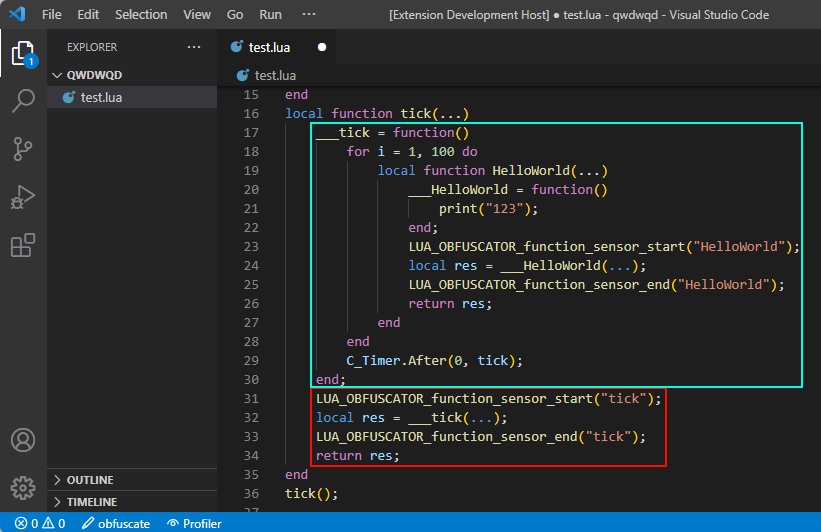
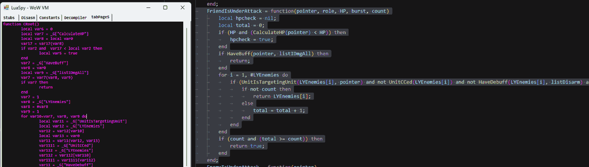
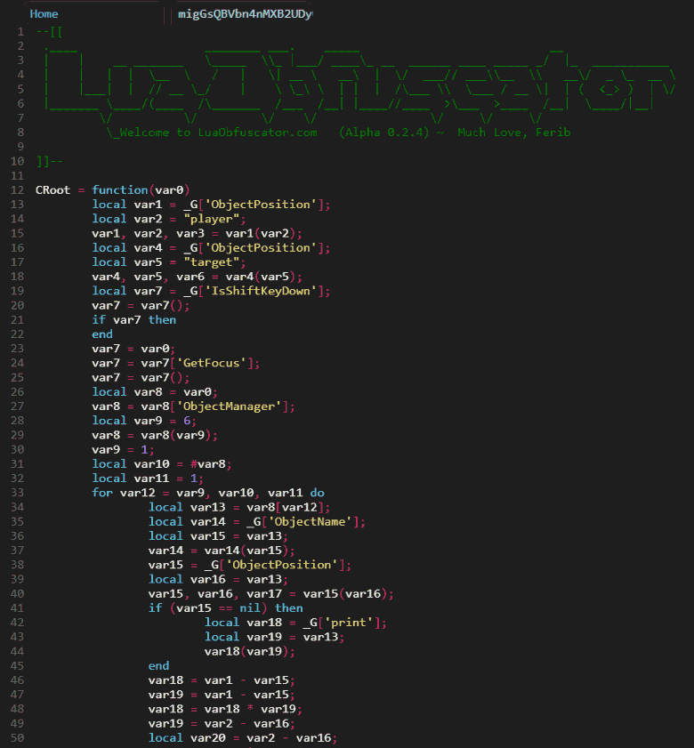
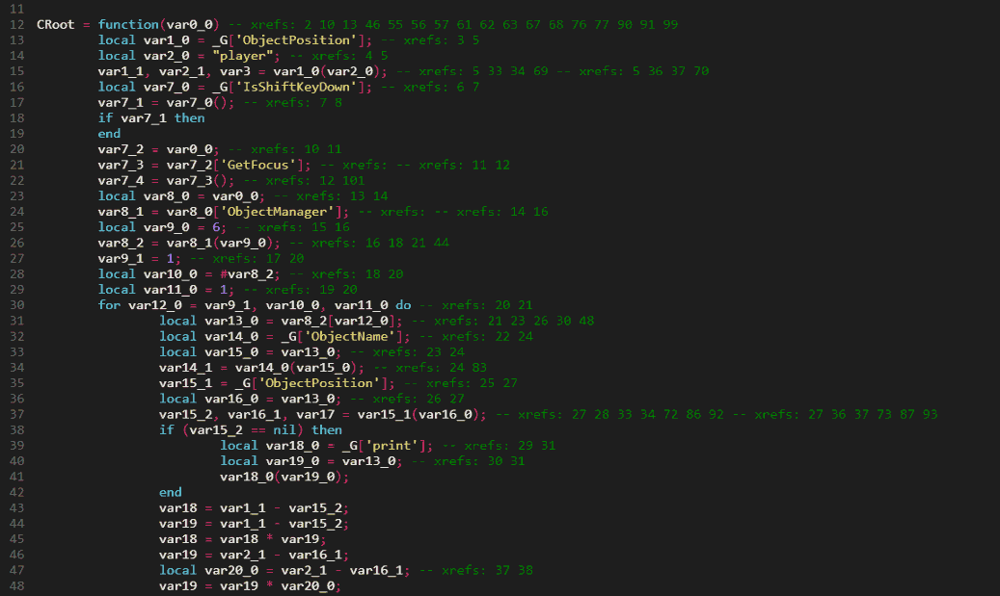
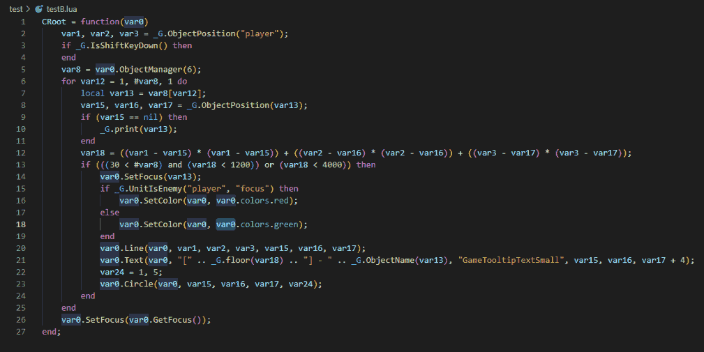
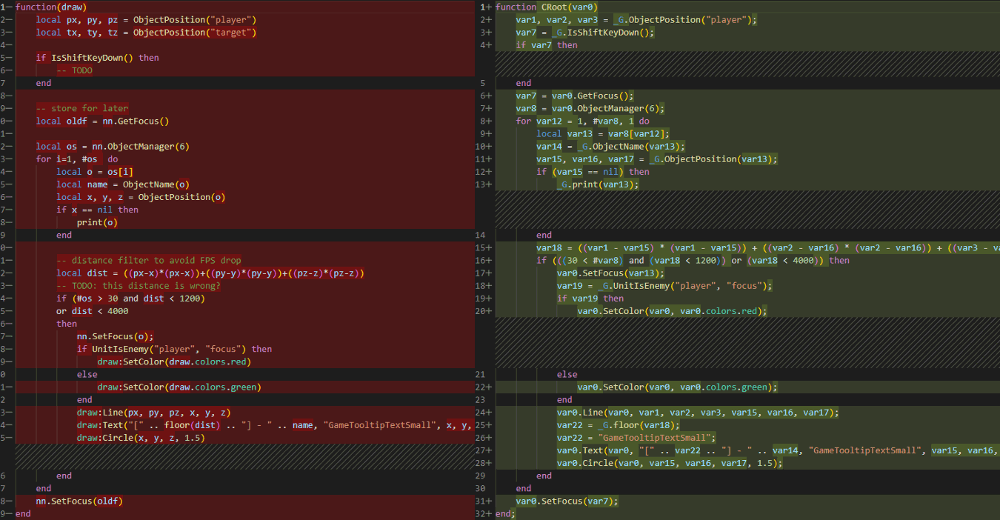
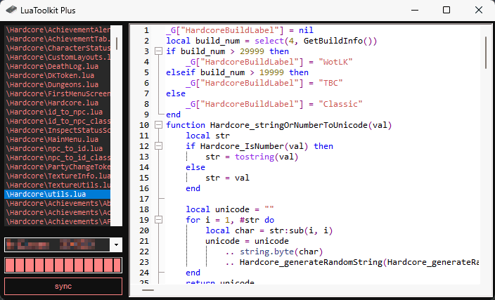

Optimizing Lua Development For Restricted Environments
In one of our previous blog posts, we experimented with Lua and saw that it was quite popular for gaming. For this blog post, my attention is set on the Lua Virtual Machine, rather than the Lua script. Meaning we will deep dive once more into the compiled Lua rabbit hole. This time the problem I am facing is that for the specific game, I use Lua, it is very locked down as it could be used to automate parts of the game, giving an unfair advantage (aka cheating). Therefore a bunch of anti-cheating measures have been implemented.
This article is for educational purposes only. The author assumes no responsibility for the actions of readers.
Restrictions
My target seems to be forked of Lua 5.1.x, the internal structures of the Lua and its VM seem to be different on an internal architectural level, but this will not be noticed from a Lua developer point of view. What is noticed by the Lua developer is the lack of debugging features. For example, the debug library is completely removed from the customized Lua. But to be honest, I am using Lua for nothing other than this game, so I don't really know what I am missing out on and therefore lack the knowledge of what debugging capabilities Lua has to offer.
My assumption would be that these libraries can be used to interrupt/hook/modify the memory and control flow of the existing Lua code being executed, therefore making it a very interesting feature for anyone wanting to do bad things.
Additionally, there is the taint feature, which allows the game to run 'protected' Lua in a secure context. According to this Defcon talk the 'secure' Lua code execution is achieved by cryptographically verifying the integrity of the Lua files, and only those that are verified will be able to run in the 'secure' context. Anything the user executes will be 'unsecure' and, can 'taint' existing variables and functions if not used carefully.
An example of user code would be a UI interface application that writes some text on the screen, the game offers a few APIs that can be used to obtain data about the game. However, the game also uses some of those APIs for things like player movement, making it easy to automatically invoke movement functionality.
My understanding is that players with a computer science degree (or players who understand Lua) should not get any unfair advantage compared to normal players, therefore the game restricts access to any API that could potentially be abused.
The Problem
Believe it or not but the only way we Lua devs are capable of 'debugging' is by using print(). This print function will print something in the in-game chat letting me know a certain line has reached and might be used to print the contents of a variable.
With that being said, I do think these security features are well-designed and do a good job of restricting user code to prevent unfair advantages. However, they still suck (for me at least) as they make the development of Lua very difficult as there is no legit way to properly debug, inspect, halt, or modify the Lua at runtime.
To fix the horrible pain I feel when developing Lua code, I came up with four interesting solutions:
Lua Code Profiling
Code profiling is pretty straight forwards, it magically measures the resource usage of a certain piece of code. With no idea how it actually works, I tried to re-use my existing Lua AST Framework used in the LuaObfuscator to inject 'sensors' into the code. These sensors would then log the name and the duration of a function as it is being called during its runtime.
The 'sensors' are injected in the Lua source as shown below.

The data can then be extracted and parsed. Unfortunately, I found little to no use in this specific feature as this is more of a micro-optimization feature.
Unit tests
No rocket science here but I might be going to re-invent the wheel on this one. My assumption was that I could isolate certain subroutines or conditions, pass some values into them and evaluate the outcome with our expected value. I planned on using MoonSharp (C# execution Lua) with a custom Lua AST Parser to quickly check what functions/subroutines/conditions can be isolated and then use MoonSharp to execute the Lua code and evaluate its outcome.
Unfortunately, the only thing that is not automated is defining input/output values, which turns this idea into too much manual labor. I had an interesting idea of using ChatGPT to automate this step, as I saw GitHub copilot do something like that.
However, I quickly noticed I am engineering problems of my own. Furthermore, I don't think having unit tests are going to be that beneficial, but it might be worth a shot another time.
Hooking Lua Memory
Another idea would be to hook the Lua VM part that is responsible for alloc, realloc and free to understand the memory usage and then inspect (read/write) Lua variables during the runtime of the game.
However, this idea was abandoned rather quickly due to some technical limitations. One of such limitations is that my tool should be a process of its own, causing multi-threading issues or race conditions. Additionally, hooking subroutines requires internal write access to the game process, something I do not wish to do for personal reasons.
Runtime Tooling
I am a big fan of C# and I know there is this magical pause button in my Visual Studio IDE that can be used to halt the execution. Not only that but one can modify the source code and have it automagically applied to the runtime of the C# application when the C# program is resumed.
This inspired me to make something similar, a tool with the sole purpose of 'hot-patching' the Lua runtime. As I said previously, we do use print to evaluate if a certain line has been reached in the Lua script or to know what value is inside a certain variable. So how awesome would it be to be able of placing your print anywhere, anytime, during runtime? No need to reload the context, no more losing state, and no time wasted putting it back in its previous state.
How Powerful is Our Runtime Tooling?
I believe we won't fly too close to the sun here as we do not conflict with anything that has been done to restrict the debug features of Lua. We will not be able to halt/interrupt or modify the control flow of the Lua script and we will not be able to touch secure code without tainting.
What we will be able to do is put a print call inside our existing 'unsecure' function (hoping it won't crash due to race conditions as it is not synced with the main thread of the Lua VM). At best this means we can re-write an existing Lua function without losing track of runtime data.
The Runtime Tooling
Runtime tooling should be pretty straightforward. The idea is that the Lua VM is running in the memory of the target, and the Lua bytecodes should be located somewhere in the heap of our target. To get started, I simply scan for every Read/Write memory page and perform some heuristic scanning to locate the Lua structs of interest.
To find what we are looking for, this is what the Lua Prototype -- that is, the internal representation of a Lua function -- looks like in the Lua 5.x, our target has its own Lua VM so there might be a slight difference in memory layout, but that should not be a problem.
/* ** Function Prototypes */ typedef struct Proto { CommonHeader; lu_byte numparams; /* number of fixed (named) parameters */ lu_byte is_vararg; lu_byte maxstacksize; /* number of registers needed by this function */ int sizeupvalues; /* size of 'upvalues' */ int sizek; /* size of 'k' */ int sizecode; int sizelineinfo; int sizep; /* size of 'p' */ int sizelocvars; int sizeabslineinfo; /* size of 'abslineinfo' */ int linedefined; /* debug information */ int lastlinedefined; /* debug information */ TValue *k; /* constants used by the function */ Instruction *code; /* opcodes */ struct Proto **p; /* functions defined inside the function */ Upvaldesc *upvalues; /* upvalue information */ ls_byte *lineinfo; /* information about source lines (debug information) */ AbsLineInfo *abslineinfo; /* idem */ LocVar *locvars; /* information about local variables (debug information) */ TString *source; /* used for debug information */ GCObject *gclist; } Proto;
Now that we know our Proto struct we can fingerprint them using some heuristics (e.g. knowing is_vararg should always be between 0 and 1) and locate all of them in memory. Once collected, we simply read the sizecode and the pointer *code with size 4*sizecode as each Lua byte is 4 bytes in size.
The next step is to decompile these Lua bytecodes to have a somewhat meaningful text representation of what they do. For the sake of simplicity, I used my half-finished LuaToolkit 'decompiler' that somewhat tries to convert the Lua bytecode back to a text representation humans can understand. The result of this basic decompilation done on a dumped Lua Proto can be seen below.

The left side, in purple, is showing the decompiled dumped memory that was compiled by the Lua VM at runtime using the code in the right.
Optimization
After decompilation, I loaded the script into LuaObfuscator to apply some beautification and highlighting. The variables have a very short lifetime as you can see, this is due to how the Lua bytecode works.

We can use the Experimental "SSA" feature of the LuaObfuscator to have 'Single Static Assignment' variables along with some comments to better show where the variables are referenced. The image below shows how the decompiled code is using a lot of variables with only 2 xrefs.

Based on this behavior we can add a few optimization passes in the LuaObfuscator that detect the 2 xref variables, along with some other small things. The result of the optimization can be seen below, at the time of writing this is very experimental and may result in code that no longer works correctly. Therefore this output should be used carefully.

After going through all of the optimizations, I think it is just best to start with the input code instead as perfect decompilation will not be possible. However, the functionality should be identical (that is if no bugs were introduced during optimization).

Finally, we can compare the original source code input (left side) with the compiled, decompiled, and then optimized output. We do have something that looks very similar altho local variable names, comments, and whitespaces have gone missing as those were lost after the compilation process
Hot Patching
Now that we played around with the Lua Proto we have a good understanding and we can do some more interesting things. One of these things is hot code patching. instead of using the decompiled output we can just pretty much use the source code and recompile this every time we modify it on disk. The newly compiled Lua bytecodes can then be carefully injected into the Lua VM at runtime and the running Lua code will be synchronized with the one on disk almost immediately.
Some Examples
(from a friend of mine)
In this example, he will demonstrate his new development process for editing Lua code within the game. To get started, he first needs to run the code in-game and make sure that it is initially loaded into the Lua engine of the game.
Next, he opens the development tool and synchronize it with the target process. Once he has done that, he can open any .lua file on his computer's disk that matches the exact (compiled) contents of the already loaded Lua he just loaded. He can then select this file and start editing it.
After he has made the desired changes to the file, he simply needs to press Ctrl+S to save the file to disk and hot patch it into the game's memory. As demonstrated in the image below, this technique allows him to receive immediate feedback in his game window.

Conclusion
We looked into three different techniques to help aid the development process for Lua in a restricted environment. We started by looking into Unit tests but quickly moved into memory techniques such as Lua VM memory hooking, but we settled on Runtime Tooling.
During our Runtime Tooling experiments, we played with the runtime Lua VM and were able to extract valuable information, such as Lua Prototype (functions), from the heap. From there we continue by reading the Lua Proto struct to extract information such as Constants, Upvalues, child Proto's, and most importantly, its Lua Bytecode.
With all that information we were successful at recovering the compiled Lua code and were able to do a very minimal level of ‘hot code patching’ by replacing the existing Lua Bytecode (located in the game memory) with bytecodes generated from our own tool.